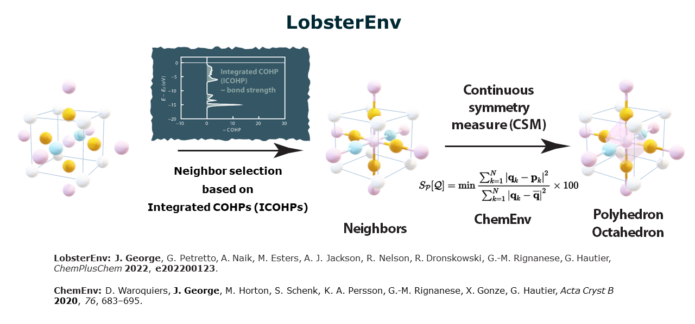
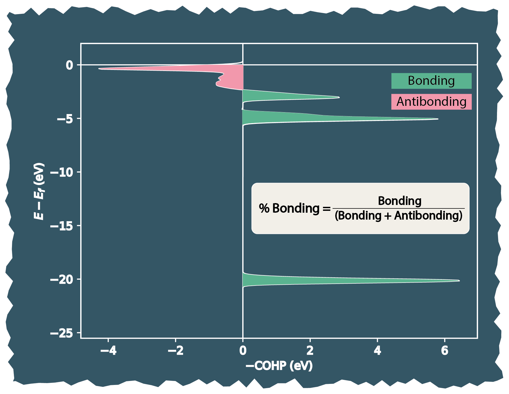
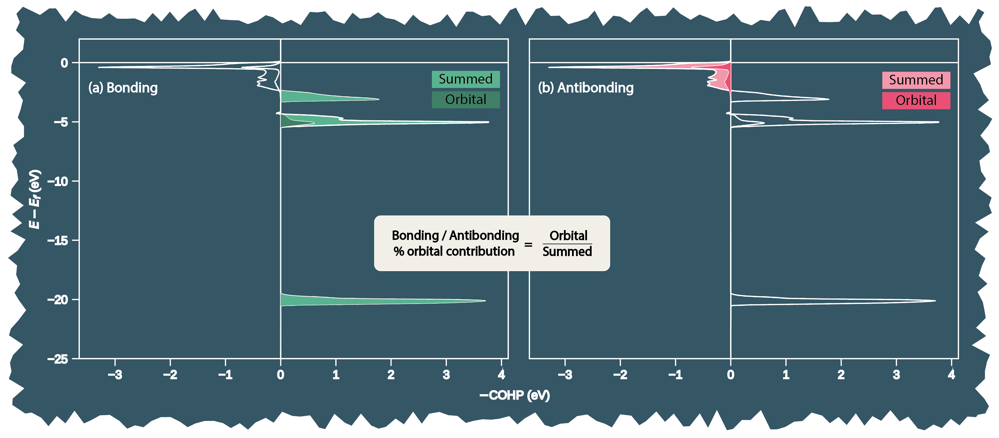

Fundamental Aspects#
This document aims to provide an overview of important algorithms and implementations that should help users understand the results one obtains from LobsterPy.
Important
In the following sections the implementations are described using ICOHPs/COHPs.
It is implied that the procedure followed is the same even for analyzing and curating features for ML for ICOOPs/COOPs or ICOBIs/COBIs.
LobsterEnv : Detect coordination environments based on the electronic structure#
New in LobsterEnv
Can handle ICOBIs and ICOOPs to detect co-ordination environments and relevant bonds.
Provide structure graphs with ICOHPs/ ICOBIs/ ICOOPs as edge properties
Lobsterenv is the central algorithm on which LobsterPy depends for automatic bonding analysis.
Below is a schematic depicting how this algorithm works. The image is from a talk given by Prof. Dr. George at MC16 2023 Dublin

Unlike purely geometry-based algorithms, e.g., Voronoi construction, which depends on angle and distance cutoffs, LobsterEnv needs only one parameter that influences neighbor selection, i.e., ICOHPs.
Thus, when running automatic analysis using the Analysis module, cutoff_icohp is the parameter to be paid attention to. This value is set to 10% by default. This means that, depending on the type of bond (cation-anion or all), only ICOHPs with a value of more than 10% of the largest ICOHPs (this value also changes depending on the type of bonds considered for analysis, cation-anion/all bonds) are considered in the analysis.
The noise_cutoff parameter takes care of numerical noise, which always exists in theoretical computations. So, ICOHPs, which are negligible, will not be considered in the bonding analysis.
Caution
So far LobsterEnv has only been tested for ICOHPs. ICOOP and ICOBI implementations are recently added.
See also
Please refer to the following sources for ChemEnv and LobsterEnv for more details on these algorithms.
Evaluating bonding and anti-bonding percentages#
LobsterPy follows the following steps to evaluate the bonding and anti-bonding percentages at each symmetrically independent site:
All the relevant bonds are identified for the site in the structure using ICOHPs via LobsterEnv (bond labels from
ICOHPLIST.lobsterare also stored, along with ICOHP values).Read the COHP data from
COHPCAR.lobstercorresponding to bond labels from step 1 and get summed COHPs data for each site separately.Perform numerical integration of the summed COHPs at each site to evaluate the bonding and antibonding integral and percentages below efermi.
One can also set the
startparameter when initializing the Analysis class object to set the start point of energy range below efermi for the integration. (Optional and useful if one wants to look at specific energy range below efermi)
Below is a visual depiction of the evaluation of bonding percentage (Step 3) from COHP data for a site with its relevant neighbours (i.e., bonds).

Similarly, the antibonding percentage is evaluated for the site from the COHP data with its relevant neighbours (i.e., bonds).
Note
Ideally, the \((bonding-antibonding) \) integral values should equal the summed ICOHP values at each site. However, as it is a known fact, numerical integration is bound to have some errors. Thus, we might not see this corroborate well for all cases.
Another crucial factor influencing the results of the numerical integration is the number of points on which the integration is performed. Thus, having a finer grid, i.e., setting COHPSteps to 2000 or more in your LOBSTER run, will help one get better estimates. From our experience, setting COHPSteps to 10000 provided very consistent results. (Be mindful that the sizes of files generated from such setting can become quite large depending on the complexity of the structure)
Also, it is important to note that the ICOHP values from ICOHPLIST.lobster consider the entire range below efermi. Thus, if the COHPCAR.lobster is not computed for the entire energy range below efermi, then your results will also not corroborate to the summed ICOHPs at the site.
Automatic orbital-wise analysis implementation#
LobsterPy follows the following steps to evaluate the relevant orbitals contributing to the bonds automatically. Steps 1 to 3 are identical to the Evaluating bonding and anti-bonding percentages. Thus, for brevity, we will not relist them here and only list the steps further. The steps mentioned below are repeated for each symmetrically independent site:
Read the list of available orbitals from
COHPCAR.lobsterat the siteGet summed COHPs for each orbital using the bond label list (step 1)
Check if the total bonding and antibonding integrals obtained in step 3 are each greater than 0
Evaluate the bonding integral (area under the curve) from COHP data for each orbital and store these values in two lists. One will have orbital pair names, and the other will have corresponding evaluated bonding integrals. Similarly, create two more lists with antibonding orbital pair names and corresponding antibonding integrals.
Evaluate the orbital contribution percentages using the following formula:
If the orbital contribution is more than the
orbital_cutoffset in the Analysis class object, include that orbital pair interaction as relevant (do this for bonding and antibonding separately using contribution percentages as evaluated in step 8.Get max anti(bonding) contribution using contribution percentages evaluated in step 8 and add it to the orbital summary dict (this dict is used in description text output generation).
As mentioned in step 9, the results will vary a lot depending on the orbital_cutoff set when initializing the Analysis class object. The default value is set to 0.05 (i.e. 5%).
Below is a visual depiction of the evaluation of orbital contribution percentage (Step 7) from summed orbital COHP data for a site. Subfigure (a) and (b) depict the evaluation of orbital contribution for bonding and antibonding interactions relative to summed orbital COHPs at the site.

Features curated for ML via Featurizer#
DOS based features#
Moment based features
These features are implemented for DOS in pymatgen by Rosen et.al. as part of their A. S. Rosen, S. Vijay, K. A. Persson, Chem. Sci. 2023, 14, 1503–1511. work
The \(n^{th}\) moment for projected dos (PDOS) is computed using following relation
\(n^{th}_{moment} = \frac{\int (p^n \cdot \text{PDOS} \, dE)}{\int \text{PDOS} \, dE}\)
The resulting \(1^{st}\), \(2^{nd}\), \(3^{rd}\) and \(4^{th}\) moment are named as *_band_center, *_band_width, *_band_skew, *_band_kurtosis, respectively. Here * denotes the orbital names, namely s,p,d, or f.
Similar features for elements can also be obtained, element DOS will be used instead of PDOS. Please check the tutorials for example usage.
See also
Please refer to the following sources for more details on these.
Fingerprints
DOS Fingerprints are basically DOS data discretized into histograms that will allow to compute similarity between DOS/PDOS of different materials numerically.
This feature was implemented in pymatgen as part of our LOBSTER database publication A. A. Naik, C. Ertural, N. Dhamrait, P. Benner, J. George, Sci Data 2023, 10, 610.
COXX based features (COXX: COHP / COBI / COOP)#
Average features
The below mentioned features are implemented based on the work of
The \(\overline{\mathrm{ICOHP}}\) can be interpreted as the average bond strength inside the given material.
\(\overline{\mathrm{COHP}}(E) =\sum_i\left(w_i \cdot \operatorname{COHP}_i(E)\right)\)
\(w_i =\frac{\mathrm{ICOHP}_i}{\mathrm{ICOHP}_{\text {total}}}\)
\(\overline{\mathrm{ICOHP}}=\int_{-\infty}^{\varepsilon_{\mathrm{F}}} \overline{\mathrm{COHP}}(E) \mathrm{d}E \)
The EIN is comparable to a coordination number
\(\mathrm{EIN}=\frac{\mathrm{ICOHP}_{\text {total }}}{\overline{\mathrm{ICOHP}}} \cdot \frac{2}{N_{\text {Atoms }}}\)
Moment based features and fingerprints
These features are inspired from the features implemented for DOS in pymatgen as described in DOS based features section above. Following features are accessible
Center
Width
Skewness
Kurtosis
Edge
Fingerprints
For the case of COXXs, the \(n^{th}\) moment is computed using following relation
\(n^{th}_{moment} = \frac{\int (p^n \cdot \text{COXXs} \, dE)}{\int \text{COXXs} \, dE}\)
The resulting \(1^{st}\), \(2^{nd}\), \(3^{rd}\) and \(4^{th}\) moment are named as center_COXX, width_COXX, skewness_COXX, kurtosis_COXX, respectively.
To generate COXX fingerprints we discretize COXX data into histograms that will allow to compute similarity between COXX curves of different materials numerically.
Tip
One can select the range of energy and type of interactions (bonding, antibonding, overall) one would like to compute these features.
Summary stats features from LobsterPy condensed bonding analysis dicts
These features were first implemented as part of our Database publication : A. A. Naik, C. Ertural, N. Dhamrait, P. Benner, J. George, Sci. Data 2023, 10, 610.
The source code can be found here.
This is code have been intergrated in our Package and it is extended to also work for COBI/COOP condensed bonding analysis dicts and can user can now also include orbital wise analysis summary stats (Optional).
Charge based features#
As Ionicity quantifies the strength of an ionic bond in the compound, there are several approaches to quantify it. Here we use the formulation as per R. Nelson, C. Ertural, P. C. Müller, R. Dronskowski, in Compr. Inorg. Chem. III, Elsevier, 2023, pp. 141–201., which use following relation:
\(I_{\text {Charges }}=\frac{1}{N_{\text {Atoms }}} \sum_i^{N_{\text {Atoms }}}\left(\frac{q_i}{v_{\text {eff }, i}}\right)\)
It is possible to compute ionicity based on above mentioned formula using either the Mulliken or Löwdin charges obtained from LOBSTER run.
ICOXX based features (ICOXX: ICOHP / ICOBI / ICOOP)#
Bond weighted distribution function (BWDF) is an extension of radial distribution function (RDF), which encodes information about the bonding character. The formulation for this was introduced in V. L. Deringer, W. Zhang, M. Lumeij, S. Maintz, M. Wuttig, R. Mazzarello, R. Dronskowski, Angewandte Chemie International Edition 2014, 53, 10817–10820 and is defined as follows :
\(\mathrm{BWDF}=\sum_{\mathrm{B}>\mathrm{A}}\left[\delta\left(r-\left|\mathbf{r}_{\mathrm{AB}}\right|\right) \times B_{\mathrm{AB}}\right]\)
In the formula above, \(\delta\) is the Dirac delta function, \(r\) is the distance between atoms A and B, and \(B_{\mathrm{AB}}\) is the bond strength between atoms A and B. The bond strength can be ICOHPs, ICOBIs, or ICOOPs. The BWDF is thus a histogram of bond strengths as a function of bond length. One can compute this for entire structure, for each unique atom pair in the structure, per site or per bond label.
Here, from the BWDF mainly statistical features like mean, standard deviation, skewness, kurtosis, weighted mean, and weighted standard deviation are computed.
As proposed by F. Belli, E. Zurek, I. Errea, 2025, one can also generate the asymmetry index (ASI) of the local bonding environment using ICOBI / ICOHP / ICOOP for a site using following formulation
\(V_x\), is computed for each atom \(x\) in the structure. The vector is the sum of the iCOXX values for all of the interactions between an atom and its neighboring atoms \(\alpha\) (iCOXX(x, \(\alpha\))) weighted by a unit vector, \(i_{xα}\), which denotes the direction of each interaction. This summation is performed over all neighbors for which the iCOXX values fall above a user-defined threshold, and divided by the number of interactions considered, \(B_x\).
One can then get statistics of ASI from all sites in the structure.